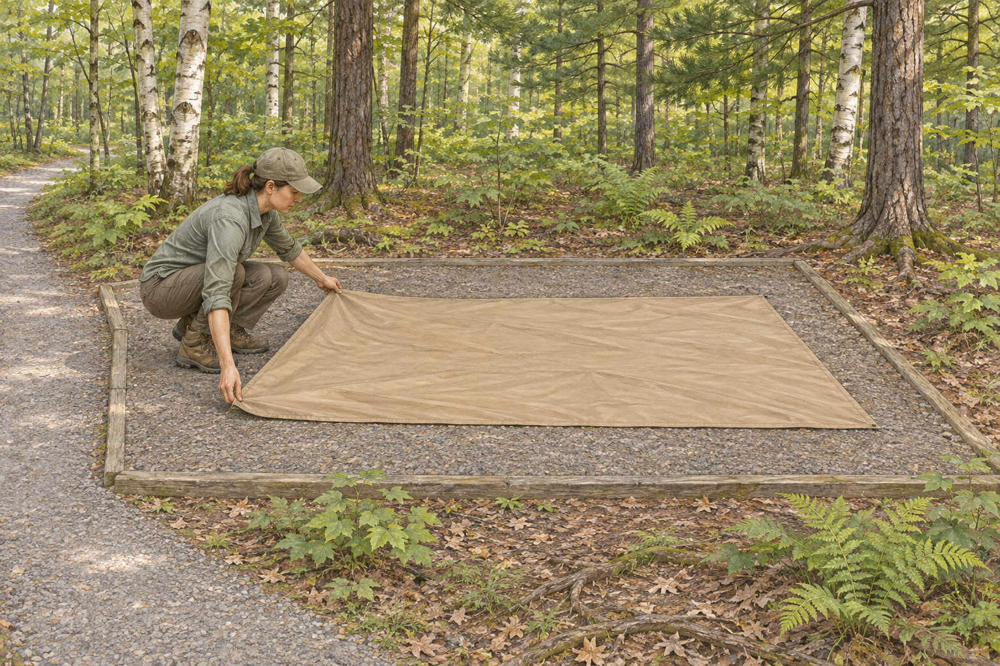
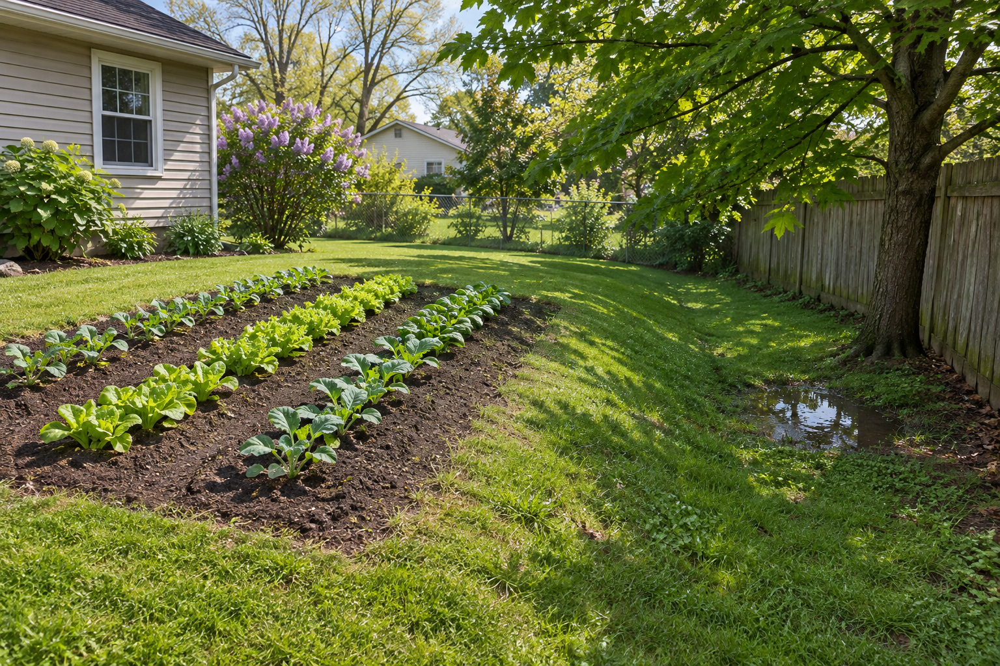
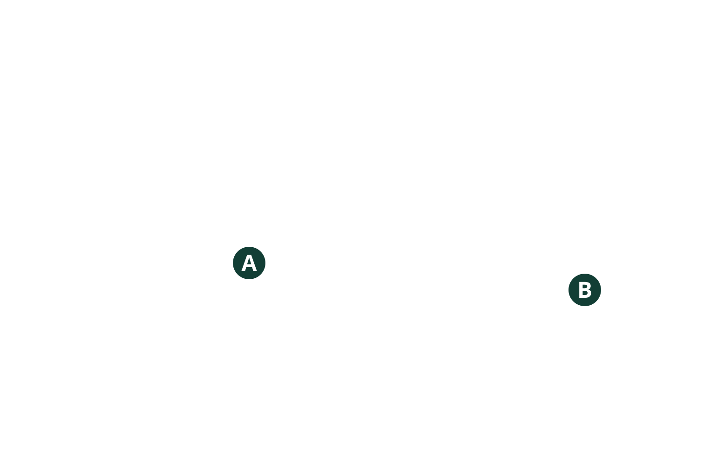

Choose durable legal surfaces without trenching or cutting live trees
Select natural high-and-dry camp pads that shed water without illegal terrain alteration or vegetation damage.
When it applies · Developed campgrounds and dispersed public-land campsites in forests, prairies and backcountry corridors.
Equipment · Local land-agency rules, map and durable groundsheet sized to the shelter footprint.

Generated instructional illustration. Physical pad boundaries and durable surfaces are visible. Obtain site authorization from the manager. The image does not establish campsite legality or weather safety.
A · Groundsheet stays inside the existing pad.
B · Leave the vegetation beyond the pad undisturbed.
Actions
Check unit camping rules and pitch on established sites, bare mineral soil, rock, gravel, dry grass or deep snow where permitted.[E03, E21, E22]
Rely on natural elevated topography for drainage rather than digging trenches around tents, which damages soil, violates park rules and still fails in heavy runoff.[E21, E22, E04]
Avoid cutting live branches, peeling bark or clearing meadow vegetation for improvised beds or poles unless facing a genuine life-safety emergency with no alternative.[E22, E03]
Failure recognition · Pitching in a soft shoreline depression and digging a drainage ditch that floods anyway while damaging fragile banks.[E21, E22, E04]
Verify · Confirm site legality, natural outward drainage slope and intact surrounding ground and live vegetation.[E03, E21, E22, ED]
Stop or change course · Move to a permitted, naturally drained durable surface whenever site legality, drainage or surface stability is uncertain.[E03, E04, E22]
Z14-P03 · Food production and preservation · New manuscript
Select sunny, well-drained garden sites and avoid low frost pockets
Maximize crop productivity and prevent root rot and premature frost kill through smart site placement.
When it applies · Planning new backyard, community, or small-acreage food gardens.
Equipment · Sun-path observation across the day, drainage check after heavy rain, and utility/septic map.


Generated instructional illustration. A single illustrated moment compares light and grade. It does not establish daily sunlight hours, frost history, drainage performance or soil safety.
A · Compare the open, higher growing area.
B · Standing water marks the lower area in this scene.
Actions
Locate vegetable beds where plants receive at least 6 to 8+ hours of unobstructed direct sunlight daily—fruiting crops (tomatoes, beans, squash) yield poorly in tree shade and suffer heavier fungal disease.[P01]
Choose gently sloping or well-drained soil well away from standing storm puddles, competitive tree roots (especially black walnut trees whose juglone toxin stunts tomatoes and potatoes), septic drainfields, and low cold-air frost pockets at valley bottoms.[P01, U07]
Call 811 ("Call Before You Dig") before deep digging or fence-post installation to avoid buried utility gas, electric, and water lines.[U14, P01]
Failure recognition · Tilling a vegetable patch directly over a backyard septic drainfield or in a shaded low swale where cold air and spring rainwater pool.[P01, U07]
Verify · Confirm ≥6–8 hours full sun, positive rain drainage, clear separation from septic/black-walnut/utilities, and safe water-tap access.[P01, U07]
Stop or change course · Standing water persisting 24+ hours after rain or buried septic lines require relocating the plot or building drained raised beds elsewhere.[P01, P02]